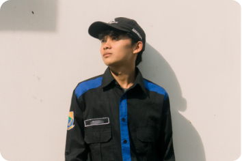

My Profile

| Nama Lengkap | Yusman Alidzar Abdulah |
|---|---|
| Institusi | UIN Sunan Gunung Djati Bandung |
| Fakultas | Sains dan Teknologi |
| Jurusan | Teknik Informatika |
| Angkatan | 2024 |
| Semester | 5 (Kelas D) |
Saya adalah mahasiswa Teknik Informatika TA 2024 di UIN Sunan Gunung Djati Bandung. Halaman ini dibuat sebagai tugas mata kuliah Pengembangan Aplikasi Web dan sekaligus berfungsi sebagai portofolio pribadi.
Data Akademik
Jadwal Mata Kuliah Semester 5 (Kelas D)
Berikut daftar 7 mata kuliah yang diambil pada semester ini, masing-masing berbobot 3 SKS (total 21 SKS).
| No. | Mata Kuliah | Hari | Waktu | Ruangan | Dosen Pengampu |
|---|---|---|---|---|---|
| 1 | Manajemen Basis Data | Senin | 12:40 - 15:10 | R.4.12 | Wildan Budiawan Zulfikar S.T., M.Kom. |
| 2 | Manajemen Proyek Perangkat Lunak | Senin | 15:30 - 18:00 | R.4.01 | Agung Wahana S.E., M.T. |
| 3 | Pengembangan Aplikasi Mobile | Selasa | 15:30 - 18:00 | R.4.01 | H. Aldy Rialdy Atmadja M.T. |
| 4 | Jaringan Komputer | Rabu | 07:00 - 09:30 | R.4.11 | Cecep Nurul Alam M.T. |
| 5 | Interaksi Manusia dan Komputer | Kamis | 07:00 - 09:30 | R.4.01 | Dr. Cepy Slamet S.T., M.Kom. |
| 6 | Pengembangan Aplikasi Web | Jumat | 07:00 - 09:30 | Gedung R.3.9 | Muhammad Deden Firdaus ST, M.Kom. |
| 7 | Inteligensia Buatan | Jumat | 12:40 - 15:10 | R.4.09 | Jumadi ST., M.Cs. |
Daftar Tugas
Berikut adalah daftar tugas untuk mata kuliah Pengembangan Aplikasi Web yang telah dikerjakan dan didokumentasikan.
| Tugas | Status | Start Date | Due Date | Cut Off Date |
|---|---|---|---|---|
|
Tugas 1: Upload Domain Order domain website yang akan dijadikan sebagai penugasan selama perkuliahan Pengembangan Aplikasi Website satu semester ini. Link Web: yusmanalidzar.me |
Selesai | 10 Sep 2026 01:00 WIB | 17 Sep 2026 23:00 WIB | 10 Jan 2027 23:00 WIB |
|
Tugas 2: Membuat Halaman Profil Diri dengan HTML5 Buat 1 halaman profil diri menggunakan HTML5 dengan ketentuan pada LMS E-Knows UIN SGD |
Selesai | 11 Sep 2026 01:00 WIB | 18 Sep 2026 23:00 WIB | 11 Jan 2027 23:00 WIB |